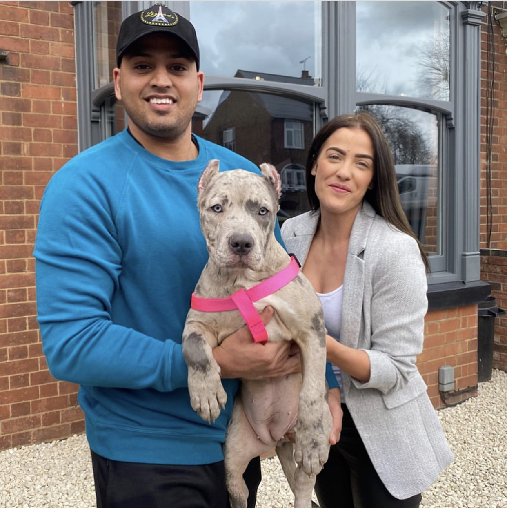
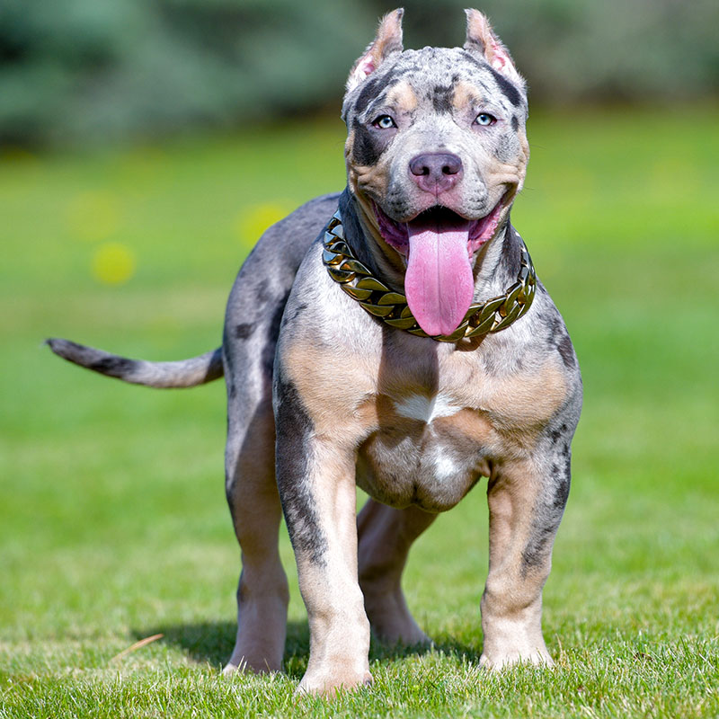
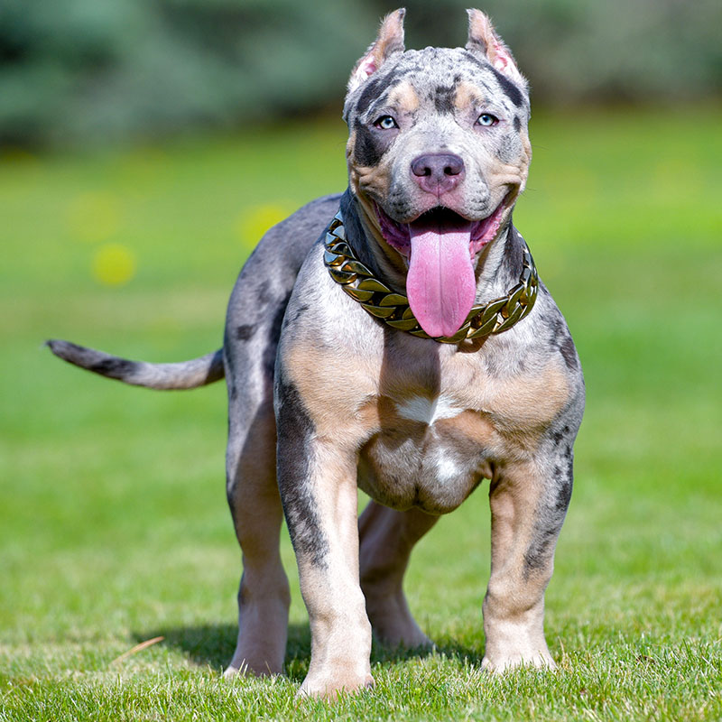

Exotic Bullies Kennelz
Trust only verified Information

Welcome to the Exotic Micro Bullies Kennelz where our dogs are family. We specialize in breeding XL/XXL American Bullies, Pocket Bullies and Exotic Micro Bullies.
Our dogs are the best family dogs, amazing
temperament with infants, children and adults. Our productions are known to have quality, size, structure and
beautiful colors. Let an Exotic pup join your family today!
As dog owners, we understand that our dog is not just our companion or best friend but also part of the
family. It is without saying that you cannot find a true friend and companion from any dick and harry but from
a trusted dog breeder and seller such as Swag Kennels. At Swag Kennels, we breed and sell the best and high-quality
American Bully breeds. When it comes to choosing the right American Bully for you, Exotic Bullies Kennelz is the place to seek.
At Exotic Bullies Kennelz, we offer the best of both XL and XXL American Bullies, Pocket bullies and Exotic Micro bullies of different colors from brown, black,
white, blue, fawn, ticking, brindle, lilac-tri, chocolate, to champagne. As the name suggests, the XL American
Bully is a bit smaller than the XXL. Also, you can acquire Gold and Diamond Chains and Leashes customized specially
for bullies by visiting Exotic Micro Bullies Kennelz. If you are seeking to buy an American Bully, you can always count on Exotic Micro Bullies Kennelz.
What Our Customers Are Saying About Us

THANK YOU EXOTIC BULLIES KENNELZ FOR THIS BEAUTIFUL PUPPY, MY FAMILY LOVES HER!
Maurkice Pouncey

CONGRATS TO NFL STAR MAURKICE POUNCEY FORMER AMERICAN FOOTBALL CENTER WHO PLAYED 11 SEASONS FOR THE PITTSBURGH STEELERS OF THE NATIONAL FOOTBALL LEAGUE (NFL) ON YOUR BEAUTIFUL PHANTOM DAUGHTER! SO GLAD WE COULD BRING YOUR PUPPY TO MEET YOU IN PERSON. THANK YOU SO MUCH MARKICE AND GOOD LUCK ON THIS UPCOMING SEASON!!!

He was worth every dime. Pups gonna be Krazy
Stephen Jackson

I WOULD LIKE TO WELCOME AMERICAN FORMER PROFESSIONAL BASKETBALL PLAYER WHO PLAYED 14 SEASONS IN THE NATIONALBASKETBALL ASSOCIATION WITH THE NEW JERSEY NETS, ATLANTA HAWKS, INDIANA PACERS, GOLDEN STATE WARRIORS, MILWAUKEE BUCKS,CHARLOTTE BOBCATS, SAN ANTONIO SPURS, AND LOS ANGELES CLIPPERS TO THE EXOTIC BULLIES KENNELZ FAMILY. HAND DELIVERED HIS NEWEST FAMILY MEMBER BABY SWAG'S "DOLPH" TO HIS BEAUTIFUL HOME IN GEORGIA. STEPHEN IT WAS AN ABSOLUTE PLEASURE MEETING YOU. THANK YOU FOR UPDATES, YOUR PUPPY IS HUGE 110 LB IN 8 MONTH OLD!!!

Thank you Exotic Bullies Kennelz for great customer service! My kids so happy with new family member!
Marquis Haynes

ANOTHER VERY HAPPY NFL SUPERSTAR! WE WOULD LIKE TO EXTEND A HUGE WARM WELCOME TO AN AMERICAN FOOTBALL DEFENSIVE END WITH THE CAROLINA PANTHERS OF THE NATIONAL FOOTBALL LEAGUE (NFL). WE HAPPY THAT YOUR FAMILY ENJOY YOUR PUP. THANK YOU FOR CHOOSING EXOTIC BULLIES KENNELZ!
What Our Customers Are Saying About Us

Big Thank you to Exotic Micro Bullies Kennelz for personal delivery Vogue All the way to The UK. Our family
are Delighted with her!
Sophie
Great people, they go above and beyond for their customers and treat their pups like family. I purchased my
baby girl Eva from them and she was worth every penny!
Adrian Santos
Very nice guys! They take care of dogs very professionally, they helped me a lot. It was very pleasant to
talk with them and definitely want to buy a puppy from them!!! Thank you!
Nick D

Exotic Bullies Kennelz are above and beyond great!!
You will not find nicer people who stay in touch, wonder how
the pups are doing and growing, and are there to answer any and EVERY question you could come up with. The
hours and dedication they put into the pups from birth til when they go home with you is outstanding.
I have
never laid hands on pups as healthy and well started as the litter I got my boy out of. I would HIGHLY recommend
doing buisness with Exotic Bullies Kennelz. You will not be disappointed.
I will certainly get another pup from them!
Justin Poiencot

You will not find a better kennel to get your xl bully from! The owners treat all the pups like they're
own babies! My husband and I bought our sweet Luna from them and we couldn't ask for a better pup! She's
playful, cuddly, loving, well behaved and not to mention the cutest thing ever! We love her so much!!
Abby Barber
Can't wait to see my little baby pitbull! I talked to Yulia, she answered all my questions, was really
nice and knowledgeable. And now I paid the deposit and just waiting for my cutie to meet. I know they are
treating their dogs really well, because I was following them for a long time. I can recommend Exotic Bullies Kennelz to my
friends and other people who would want to get healthy puppy pitbulls.
Anastasia A

By the far the best kennel out there. We got our baby drogo from there and he couldn’t be more of a blessing.
If you’re looking for a sweet, and beautiful puppy make sure you got it from them. They’re very knowledgeable
and treat all the puppies as their own.
Fady Elaiwat
Purchased my beautiful Xl bullie from Exotic Bullies kennelz and I absolutely have to say that Yulia and
her husband are the most loving, nicest people I have ever met, they know exactly what they
are doing in this business they love and care for thier pets as if they are family! Always willing to answer
questions Very informative And go above and beyond! Believe me you wont dissapointed in perchasing a pup
from them♡
RinaHeart
XXL/XL Pitbull Bully puppies
In 2020 - 2021 we are going to offer a huge variety of healthy and strong XL AMERICAN PITBULL BULLY PUPPIES for sale that come with amazing family temperament and the best bloodlines. We breed Pitbull Bully Dogs with most unique colors: Merle bullies, Tri Pit bulls, Fawn pit bulls, red nose pit bull puppies and blue nose pit bulls for sale. We raise our pit bull puppies with extra care to make them strong athletic with gentle family temperament and extremely loving PITBULL puppies. If you are looking for huge xl pitbull puppy companion for a years, best puppy friend for your kids and going to add bully puppy with the best pedigree to your family you are in the right place now! Our pitbulls puppy are nothing short of greatness. Swag Kennels is not regular pitbull breeder, our dogs are family and we take extra care of each our bully pitbull here in our house. We work hard to produce the best pitbull family dogs and pitbull puppies for sale and provide worldwide shipping.
Our Pitbull American Bully Dogs
Temperament
 American Pitbull Terriers/American Bully descended from extremely
people-oriented breeds. These dogs are very affectionate, even clingy. Despite their forbidding exterior,
American bully /pitbull are soft-hearted, enjoy affection and interacting with humans. These dogs love
the entire family rather than just one person and are known to adore children.
American Pitbull Terriers/American Bully descended from extremely
people-oriented breeds. These dogs are very affectionate, even clingy. Despite their forbidding exterior,
American bully /pitbull are soft-hearted, enjoy affection and interacting with humans. These dogs love
the entire family rather than just one person and are known to adore children.
American Bullies / Pit bulls have a high tolerance of pain and are able to withstand roughness and even pain
inflicted by children. They rarely snarl and never bite. At the same time, they know that children are their
tireless playmates and best friends. As is the case with other breeds, correct socialization is key for normal
interaction between these dogs and children.
Bullies and Pitbulls strangers well, as aggressiveness was a highly undesirable trait for their ancestors. If
raised correctly, they are friendly and well-mannered. Some individual dogs may be wary and distrustful, but
friendly animals who regard strangers as potential friends constitute the vast majority of the breed. However,
they still need to undergo training, as these dogs’ physical strength makes them unmanageable in a hostile
situation.
American Pit-bull Terriers / American Bully have natural protective instinct but are calm. They may make
acceptable watch dogs, but are not sufficiently aggressive for this purpose. However, they don’t really need to
be aggressive, as their looks are often deterring enough.
XXL/XL American bully puppies, Exotic micro bullies and pocket bullies produced by Exotic Bullies Kennelz Inc


 
